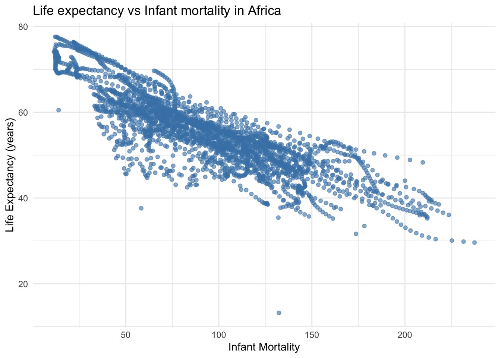
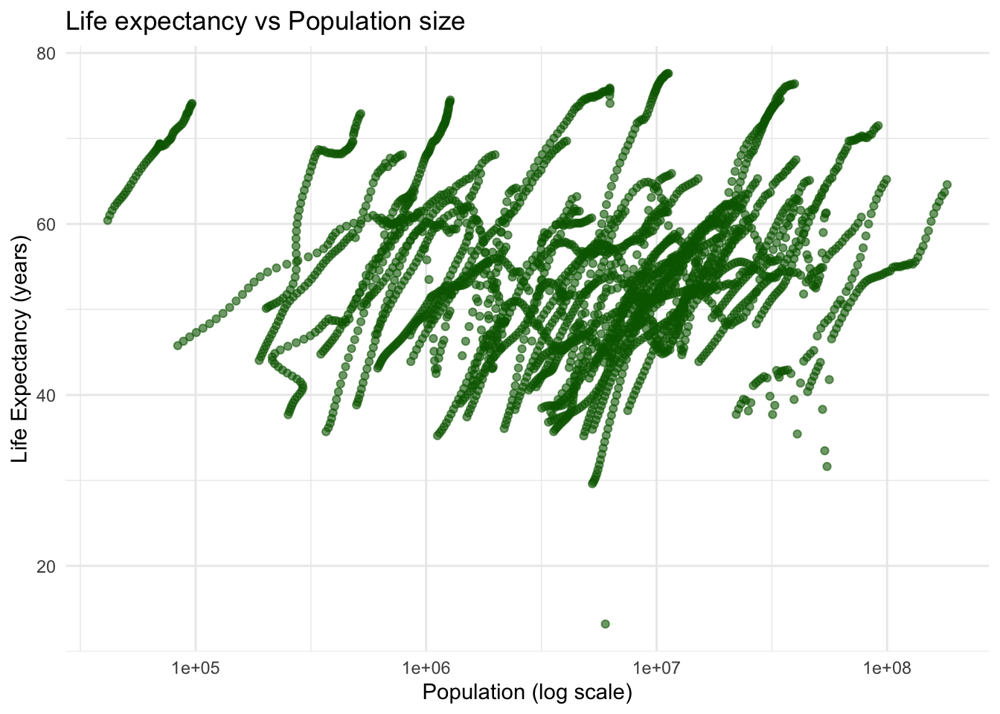
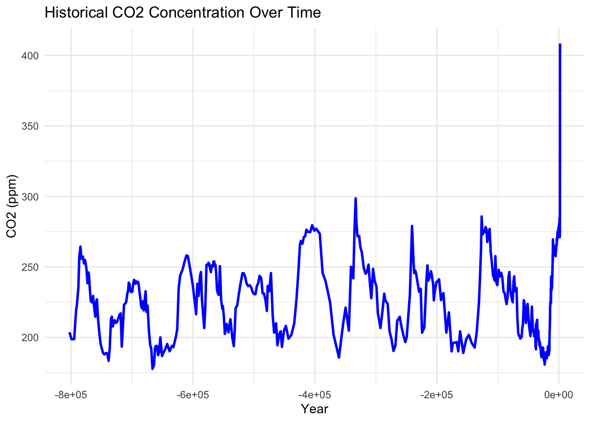
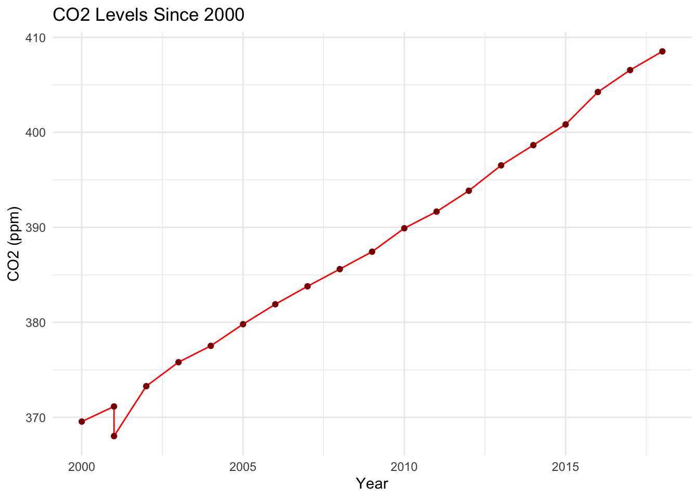

Warning: package 'dslabs' was built under R version 4.4.3
library("dplyr")
Attaching package: 'dplyr'
The following objects are masked from 'package:stats':
filter, lag
The following objects are masked from 'package:base':
intersect, setdiff, setequal, union
library("ggplot2")# get an overview of data structurestr(gapminder)
'data.frame': 10545 obs. of 9 variables:
$ country : Factor w/ 185 levels "Albania","Algeria",..: 1 2 3 4 5 6 7 8 9 10 ...
$ year : int 1960 1960 1960 1960 1960 1960 1960 1960 1960 1960 ...
$ infant_mortality: num 115.4 148.2 208 NA 59.9 ...
$ life_expectancy : num 62.9 47.5 36 63 65.4 ...
$ fertility : num 6.19 7.65 7.32 4.43 3.11 4.55 4.82 3.45 2.7 5.57 ...
$ population : num 1636054 11124892 5270844 54681 20619075 ...
$ gdp : num NA 1.38e+10 NA NA 1.08e+11 ...
$ continent : Factor w/ 5 levels "Africa","Americas",..: 4 1 1 2 2 3 2 5 4 3 ...
$ region : Factor w/ 22 levels "Australia and New Zealand",..: 19 11 10 2 15 21 2 1 22 21 ...
# get a summary of datasummary(gapminder)
country year infant_mortality life_expectancy
Albania : 57 Min. :1960 Min. : 1.50 Min. :13.20
Algeria : 57 1st Qu.:1974 1st Qu.: 16.00 1st Qu.:57.50
Angola : 57 Median :1988 Median : 41.50 Median :67.54
Antigua and Barbuda: 57 Mean :1988 Mean : 55.31 Mean :64.81
Argentina : 57 3rd Qu.:2002 3rd Qu.: 85.10 3rd Qu.:73.00
Armenia : 57 Max. :2016 Max. :276.90 Max. :83.90
(Other) :10203 NA's :1453
fertility population gdp continent
Min. :0.840 Min. :3.124e+04 Min. :4.040e+07 Africa :2907
1st Qu.:2.200 1st Qu.:1.333e+06 1st Qu.:1.846e+09 Americas:2052
Median :3.750 Median :5.009e+06 Median :7.794e+09 Asia :2679
Mean :4.084 Mean :2.701e+07 Mean :1.480e+11 Europe :2223
3rd Qu.:6.000 3rd Qu.:1.523e+07 3rd Qu.:5.540e+10 Oceania : 684
Max. :9.220 Max. :1.376e+09 Max. :1.174e+13
NA's :187 NA's :185 NA's :2972
region
Western Asia :1026
Eastern Africa : 912
Western Africa : 912
Caribbean : 741
South America : 684
Southern Europe: 684
(Other) :5586
# determine the type of object gapminder isclass(gapminder)
[1] "data.frame"
africadata <- gapminder %>%filter(continent =="Africa")# Create a new data frame with only 'infant_mortality' and 'life_expectancy'africa_mort_life <- africadata %>%select(infant_mortality, life_expectancy)# Create another data frame with only 'population' and 'life_expectancy'africa_pop_life <- africadata %>%select(population, life_expectancy)# Check the structure of the first new objectstr(africa_mort_life)
'data.frame': 2907 obs. of 2 variables:
$ infant_mortality: num 148 208 187 116 161 ...
$ life_expectancy : num 47.5 36 38.3 50.3 35.2 ...
# Check a summary of the data to understand distributions and NA presencesummary(africa_mort_life)
infant_mortality life_expectancy
Min. : 11.40 Min. :13.20
1st Qu.: 62.20 1st Qu.:48.23
Median : 93.40 Median :53.98
Mean : 95.12 Mean :54.38
3rd Qu.:124.70 3rd Qu.:60.10
Max. :237.40 Max. :77.60
NA's :226
# Check the structure of the second new objectstr(africa_pop_life)
'data.frame': 2907 obs. of 2 variables:
$ population : num 11124892 5270844 2431620 524029 4829291 ...
$ life_expectancy: num 47.5 36 38.3 50.3 35.2 ...
# Summary of population and life expectancysummary(africa_pop_life)
population life_expectancy
Min. : 41538 Min. :13.20
1st Qu.: 1605232 1st Qu.:48.23
Median : 5570982 Median :53.98
Mean : 12235961 Mean :54.38
3rd Qu.: 13888152 3rd Qu.:60.10
Max. :182201962 Max. :77.60
NA's :51
I created two new data frames from the “africadata” object:
- “africa_mort_life”: Contains only the “infant_mortality” and “life_expectancy” columns. - “africa_pop_life”: Contains only the “population” and “life_expectancy” columns.
Both data frames contain 2907 rows (one for each African country-year observation) and 2 columns. I used str() to inspect the structure (data types and column names) and summary() to examine the distribution and detect missing values.
# Load dplyr packagelibrary(dplyr)# Create the object with infant_mortality and life_expectancyafrica_mort_life <- africadata %>%select(infant_mortality, life_expectancy)# Plotting Life expectancy vs infant mortality ggplot(africa_mort_life, aes(x = infant_mortality, y = life_expectancy)) +geom_point(alpha =0.6, color ="steelblue") +labs(title ="Life expectancy vs Infant mortality in Africa",x ="Infant Mortality",y ="Life Expectancy (years)" ) +theme_minimal()
Warning: Removed 226 rows containing missing values or values outside the scale range
(`geom_point()`).

This plot shows a negative correlation between infant mortality and life expectancy. Countries with higher infant mortality tend to have lower life expectancy.
# Create population vs life expectancy data from africadataafrica_pop_life <- africadata %>%select(population, life_expectancy)# Plotting Life expectancy vs pop size ggplot(africa_pop_life, aes(x = population, y = life_expectancy)) +geom_point(alpha =0.6, color ="darkgreen") +scale_x_log10() +# log scale for populationlabs(title ="Life expectancy vs Population size",x ="Population (log scale)",y ="Life Expectancy (years)" ) +theme_minimal()
Warning: Removed 51 rows containing missing values or values outside the scale range
(`geom_point()`).

Here, we observe a positive correlation between population size and life expectancy.
However, the data displays streaks of points. When we examine the original africadata again, we notice that each country has multiple entries over time (from 1960 to 2016). These streaks represent temporal data points for each country, where each streak corresponds to a single country progressing over time.
# Now perform analysis for year 20000africadata_year2000 <-subset(africadata, year ==2000)# get an overview of data structurestr(africadata_year2000)
'data.frame': 51 obs. of 9 variables:
$ country : Factor w/ 185 levels "Albania","Algeria",..: 2 3 18 22 26 27 29 31 32 33 ...
$ year : int 2000 2000 2000 2000 2000 2000 2000 2000 2000 2000 ...
$ infant_mortality: num 33.9 128.3 89.3 52.4 96.2 ...
$ life_expectancy : num 73.3 52.3 57.2 47.6 52.6 46.7 54.3 68.4 45.3 51.5 ...
$ fertility : num 2.51 6.84 5.98 3.41 6.59 7.06 5.62 3.7 5.45 7.35 ...
$ population : num 31183658 15058638 6949366 1736579 11607944 ...
$ gdp : num 5.48e+10 9.13e+09 2.25e+09 5.63e+09 2.61e+09 ...
$ continent : Factor w/ 5 levels "Africa","Americas",..: 1 1 1 1 1 1 1 1 1 1 ...
$ region : Factor w/ 22 levels "Australia and New Zealand",..: 11 10 20 17 20 5 10 20 10 10 ...
# summary of datasummary(africadata_year2000)
country year infant_mortality life_expectancy
Algeria : 1 Min. :2000 Min. : 12.30 Min. :37.60
Angola : 1 1st Qu.:2000 1st Qu.: 60.80 1st Qu.:51.75
Benin : 1 Median :2000 Median : 80.30 Median :54.30
Botswana : 1 Mean :2000 Mean : 78.93 Mean :56.36
Burkina Faso: 1 3rd Qu.:2000 3rd Qu.:103.30 3rd Qu.:60.00
Burundi : 1 Max. :2000 Max. :143.30 Max. :75.00
(Other) :45
fertility population gdp continent
Min. :1.990 Min. : 81154 Min. :2.019e+08 Africa :51
1st Qu.:4.150 1st Qu.: 2304687 1st Qu.:1.274e+09 Americas: 0
Median :5.550 Median : 8799165 Median :3.238e+09 Asia : 0
Mean :5.156 Mean : 15659800 Mean :1.155e+10 Europe : 0
3rd Qu.:5.960 3rd Qu.: 17391242 3rd Qu.:8.654e+09 Oceania : 0
Max. :7.730 Max. :122876723 Max. :1.329e+11
region
Eastern Africa :16
Western Africa :16
Middle Africa : 8
Northern Africa : 6
Southern Africa : 5
Australia and New Zealand: 0
(Other) : 0
# Now we will apply models to our analysis of year 2000 to see if they are significant correlations:# Model 1: Predict life expectancy using infant mortalityfit1 <-lm(life_expectancy ~ infant_mortality, data = africadata_year2000)# Model 2: Predict life expectancy using population sizefit2 <-lm(life_expectancy ~ population, data = africadata_year2000)# Print model summaries to screensummary(fit1)
Call:
lm(formula = life_expectancy ~ infant_mortality, data = africadata_year2000)
Residuals:
Min 1Q Median 3Q Max
-22.6651 -3.7087 0.9914 4.0408 8.6817
Coefficients:
Estimate Std. Error t value Pr(>|t|)
(Intercept) 71.29331 2.42611 29.386 < 2e-16 ***
infant_mortality -0.18916 0.02869 -6.594 2.83e-08 ***
---
Signif. codes: 0 '***' 0.001 '**' 0.01 '*' 0.05 '.' 0.1 ' ' 1
Residual standard error: 6.221 on 49 degrees of freedom
Multiple R-squared: 0.4701, Adjusted R-squared: 0.4593
F-statistic: 43.48 on 1 and 49 DF, p-value: 2.826e-08
lm(formula = life_expectancy ~ infant_mortality, data = africadata_year2000)
Call:
lm(formula = life_expectancy ~ population, data = africadata_year2000)
Residuals:
Min 1Q Median 3Q Max
-18.429 -4.602 -2.568 3.800 18.802
Coefficients:
Estimate Std. Error t value Pr(>|t|)
(Intercept) 5.593e+01 1.468e+00 38.097 <2e-16 ***
population 2.756e-08 5.459e-08 0.505 0.616
---
Signif. codes: 0 '***' 0.001 '**' 0.01 '*' 0.05 '.' 0.1 ' ' 1
Residual standard error: 8.524 on 49 degrees of freedom
Multiple R-squared: 0.005176, Adjusted R-squared: -0.01513
F-statistic: 0.2549 on 1 and 49 DF, p-value: 0.6159
lm(formula = life_expectancy ~ population, data = africadata_year2000)
Call:
lm(formula = life_expectancy ~ population, data = africadata_year2000)
Coefficients:
(Intercept) population
5.593e+01 2.756e-08
I fitted two simple linear regression models using the lm() function on African countries in the year 2000:
Model 1 (fit1): Life expectancy as a function of infant mortality. - The model shows a negative correlation between infant mortality and life expectancy. - The estimate for infant mortality is negative and statistically significant (very low p-value), which confirms this inverse relationship.
Model 2 (fit2): Life expectancy as a function of population size. - This model shows not a strong correlation between population size and life expectancy. - The p-value and r-quared are not significant.
In the year 2000, infant mortality is a stronger predictor of life expectancy than population size, at least in the year 2000 in Africa.
# Additional Data Exploration – this part was contributed by Talia C. Swansonlibrary(dslabs)library(dplyr)library(ggplot2)# Upload chosen datasetdata("historic_co2")# Displaying all points in the historic_co2 datasethistoric_co2
# A tibble: 694 × 3
year co2 source
<dbl> <dbl> <chr>
1 1959 316. Mauna Loa
2 1960 317. Mauna Loa
3 1961 318. Mauna Loa
4 1962 318. Mauna Loa
5 1963 319. Mauna Loa
6 1964 320. Mauna Loa
7 1965 320. Mauna Loa
8 1966 321. Mauna Loa
9 1967 322. Mauna Loa
10 1968 323. Mauna Loa
# ℹ 684 more rows
The str( ) function shows the structure of the historic_co2 dataset. It has 694 total observations and 3 variables, year – the year of measurement co2 – the CO₂ concentration source – the measurement source
This helps us understand the type of data we’re working with and confirms that the dataset is ready for analysis and visualization.
# You will preview beginning data and look at your descriptive statshead(historic_co2)
# A tibble: 6 × 3
year co2 source
<dbl> <dbl> <chr>
1 1959 316. Mauna Loa
2 1960 317. Mauna Loa
3 1961 318. Mauna Loa
4 1962 318. Mauna Loa
5 1963 319. Mauna Loa
6 1964 320. Mauna Loa
summary(historic_co2)
year co2 source
Min. :-803182 Min. :177.7 Length:694
1st Qu.:-470498 1st Qu.:206.7 Class :character
Median : -43278 Median :236.9 Mode :character
Mean :-219753 Mean :245.9
3rd Qu.: -8924 3rd Qu.:271.8
Max. : 2018 Max. :408.5
The head( ) function displays the first 6 rows of the dataset. From this, we can see that CO₂ concentrations start around 316 ppm in 1959 from Mauna Loa and that measurements are chronological.
The summary( ) function provides descriptive statistics for each variable we have, year, source, and co2 concentration.
# Plotting CO2 concentration over all timeggplot(historic_co2, aes(x = year, y = co2)) +geom_line(color ="blue", size =1) +labs(title ="Historical CO2 Concentration Over Time",x ="Year",y ="CO2 (ppm)") +theme_minimal()
Warning: Using `size` aesthetic for lines was deprecated in ggplot2 3.4.0.
ℹ Please use `linewidth` instead.

The historic_co2 dataset contains atmospheric CO₂ concentrations measured over time with the first table showing the first few observations within the dataset. Within this visualization, CO₂ concentrations have increased steadily from the mid 1900’s onward. There are small fluctuations of increasing and decreasing behavior throughout the years, however, the general trend is moving upwards indictaing a long-term rise in atmospheric CO₂ levels.
# Filter for recent years 2000 onwards as targetrecent_co2 <- historic_co2 %>%filter(year >=2000)# Display the table of points used in the plot (for recent years)recent_co2
# A tibble: 20 × 3
year co2 source
<dbl> <dbl> <chr>
1 2000 370. Mauna Loa
2 2001 371. Mauna Loa
3 2002 373. Mauna Loa
4 2003 376. Mauna Loa
5 2004 378. Mauna Loa
6 2005 380. Mauna Loa
7 2006 382. Mauna Loa
8 2007 384. Mauna Loa
9 2008 386. Mauna Loa
10 2009 387. Mauna Loa
11 2010 390. Mauna Loa
12 2011 392. Mauna Loa
13 2012 394. Mauna Loa
14 2013 397. Mauna Loa
15 2014 399. Mauna Loa
16 2015 401. Mauna Loa
17 2016 404. Mauna Loa
18 2017 407. Mauna Loa
19 2018 409. Mauna Loa
20 2001 368. Ice Cores
# This will plot our graph of atmospheric CO2 for years 2000 and aboveggplot(recent_co2, aes(x = year, y = co2)) +geom_line(color ="red") +geom_point(color ="darkred") +labs(title ="CO2 Levels Since 2000",x ="Year",y ="CO2 (ppm)") +theme_minimal()

This visualization focuses on CO₂ levels from the year 2000 to the present. During this period, CO₂ concetrations continue to increase at a steady rate without any major decreases or fluctuations. This suggests that atmospheric CO₂ have consistently risen in more recent years.